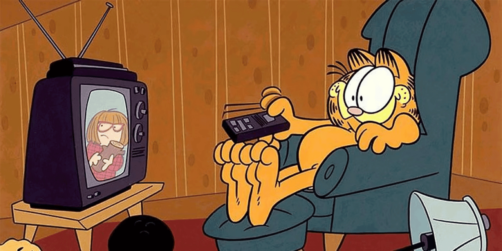

NEGÓCIOS
(Imagem: Garfield | Reprodução)
Another one… Depois de Netflix e Disney+, a Amazon acaba de anunciar que vai
inserir anúncios a partir do ano que vem no Prime Video, seu streaming de
filmes e séries.
A partir do ano que vem, além dos US$ 15 da assinatura tradicional, os usuários
do Prime terão de pagar uma taxa extra de 3 dólares, caso não desejem ver os
anúncios enquanto assistem.
-
Inicialmente, a novidade chegará em alguns países específicos, mas a sua
sériezinha aqui no Brasil ainda não será afetada pela medida.
A relevância: Mais que mais uma gigante do streaming adotando o movimento,
estamos observando o modelo da tradicional TV se tornar “novo” de novo, já que a
receita publicitária volta a ser necessária para essas empresas.
|
É um caminho sem volta… 📺
O streaming de vídeo foi resistente a publicidade por muitos anos, mas a Netflix
relatou uma alta na receita depois de bloquear o compartilhamento de senhas e
adotar o modelo, com quase 6 milhões de novos assinantes.
-
Agora, com a adoção da Amazon, apenas a Apple permanece resistente ao
modelo “Ads-Free”, mas é provável que essa exclusividade não dure por muito
tempo.
Falando em Prime Video… Amanhã, o streaming vai transmitir a volta do
tradicional Victoria’s Secret Fashion Show depois de 4 anos. Clique se quiser
aprofundar.